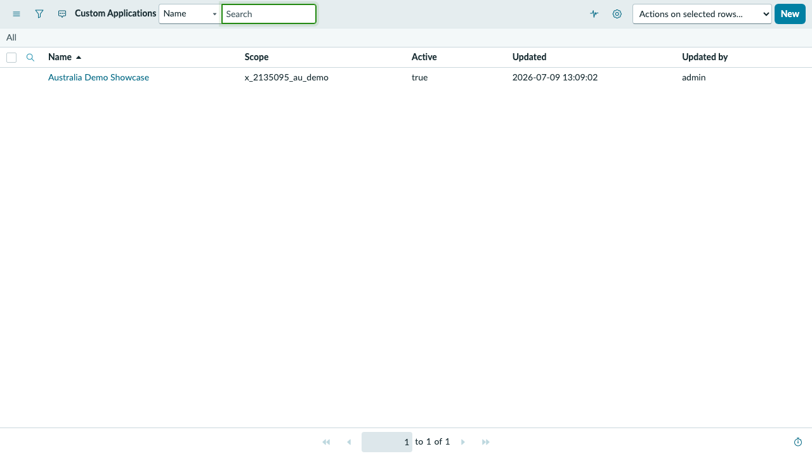
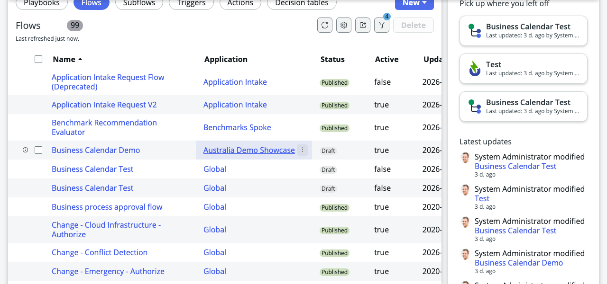
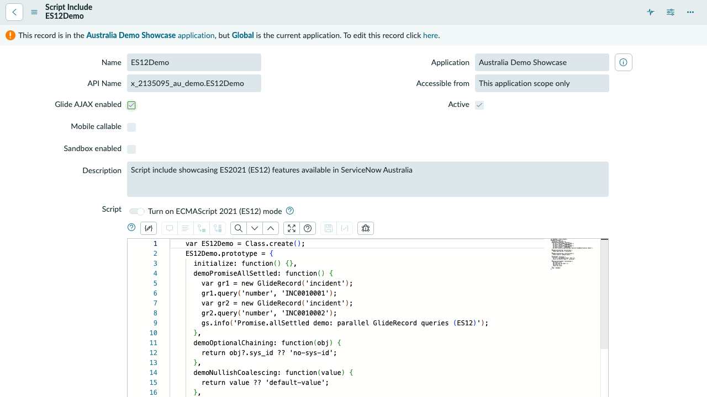
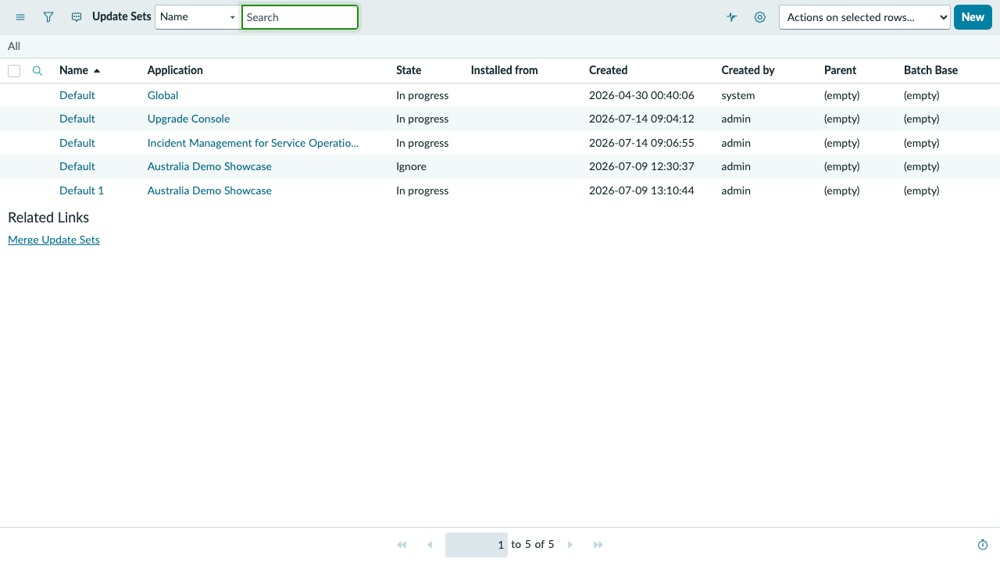

Command
Output excerpt
What it learned
ServiceNow CLI for agents
snow-cli gives developers and terminal-based agents a structured command surface for ServiceNow. Investigate Flow Designer artifacts, trace instance code, map custom applications, and review recent changes without navigating the UI for every question.
Captured JSON / first returned active flow { "total": 311, "returned": 5, "truncated": true, "records": [{ "sys_updated_on": "2026-04-30 08:31:44", "active": "true", "name": "Request Management Approval" }] } ... 4 more returned records (truncated for display); response reports 311 total
The agent workflow
A developer asks Claude Code, opencode, pi, or another terminal harness to review a flow. The agent invokes snow-cli, reads the table schema before it queries Flow Designer records, searches instance code, and reviews recent development activity. Every output below is excerpted from a sanitized v0.6.0 run.
$ ./target/release/snow-cli --profile e2e --read-only --output json table schema sys_hub_flow
Captured JSON / first 3 of 13 entries [ { "column": "compiler_build", "type": "string", "label": "Compiler build" }, { "column": "generation_source", "type": "string", "label": "Generation source" }, { "column": "master_snapshot_digest", "type": "string", "label": "Main snapshot Digest" } ] ... 10 more schema entries (truncated for display)
$ ./target/release/snow-cli --profile e2e --read-only --output json table list sys_hub_flow \ --query 'active=true' --fields name,active,sys_updated_on --limit 5
Captured JSON / first 2 returned records { "total": 311, "returned": 5, "truncated": true, "records": [ { "sys_updated_on": "2026-04-30 08:31:44", "active": "true", "name": "Request Management Approval" }, { "sys_updated_on": "2026-04-30 08:25:13", "name": "[Interaction] Review and attach article", "active": "true" } ] } ... 3 more returned records (truncated for display); response reports 311 total
$ ./target/release/snow-cli --profile e2e --read-only --output json codesearch search GlideAjax --limit 10
Captured JSON / selected fields from first 2 UI Page hits [ { "recordType": "sys_ui_page", "hits": [ { "name": "$pwd_change", "className": "sys_ui_page", "context": " var ga = new GlideAjax('PwdAjaxChangePassword');" }, { "name": "$pwd_enrollment_form_container", "className": "sys_ui_page", "context": "\tvar ga = new GlideAjax('PwdAjaxEnrollmentProcessor');" } ] } ] ... 8 more UI Page hits and 20 more source groups (truncated for display); record identifiers omitted
$ ./target/release/snow-cli --profile e2e --read-only --output json table list sys_update_xml \ --query 'ORDERBYDESCsys_updated_on' \ --fields name,type,action,sys_updated_on,update_set --limit 10
Captured JSON / selected non-identifying fields from first 3 records { "total": 284, "returned": 10, "truncated": true, "records": [ { "type": "System Property", "action": "INSERT_OR_UPDATE", "sys_updated_on": "2026-07-17 14:25:06" }, { "action": "INSERT_OR_UPDATE", "sys_updated_on": "2026-07-15 03:12:07", "type": "System Property" }, { "action": "INSERT_OR_UPDATE", "sys_updated_on": "2026-07-14 20:17:44", "type": "Access Roles" } ] } ... 7 more returned records (truncated for display); record and update-set identifiers omitted
Captured, not simulated: commands and selected output values above come from matching files under artifacts/e2e/v0.6.0/. Excerpts omit record identifiers and instance-specific links, and mark every truncation. snow-cli exposes records and related code for inspection; it does not replace the visual Flow Designer authoring canvas.
A distilled replay of pi with GPT 5.6 answering: "Which custom apps are installed and what changed recently?" The agent stays read-only, makes a wrong argument choice, encounters a timeout and permission warnings, then works from the partial evidence.
ServiceNow code search
Use codesearch search when a flow, business rule, or Script Include points to logic you need to trace. Restrict the search to a source table, an application scope, or the current scope.
$ ./target/release/snow-cli --profile e2e --read-only --output json codesearch search GlideAjax --limit 10
Captured JSON / selected fields from first 2 UI Page hits [ { "recordType": "sys_ui_page", "hits": [ { "name": "$pwd_change", "className": "sys_ui_page", "context": " var ga = new GlideAjax('PwdAjaxChangePassword');" }, { "name": "$pwd_enrollment_form_container", "className": "sys_ui_page", "context": "\tvar ga = new GlideAjax('PwdAjaxEnrollmentProcessor');" } ] } ] ... 8 more UI Page hits and 20 more source groups (truncated for display); record identifiers omitted
Captured command: codesearch search GlideAjax --limit 10. This run returned UI Page hits; its Script Include source group was empty.
Custom application overview
scope list reads scope, Store application, and plugin metadata and classifies results by origin. Filter to custom applications to identify the app scopes relevant to a review.
$ ./target/release/snow-cli --profile e2e --read-only --output json scope list \ --kind custom-app
Captured JSON / selected non-identifying fields { "kind_filter": ["custom_app"], "counts": { "total": 1, "by_kind": { "custom_app": 1 } }, "rows": [{ "kind": "custom_app", "scope": "x_2135095_au_demo", "name": "Australia Demo Showcase", "version": "0.0.1", "identifier": "", "source_table": "sys_scope" }], "warnings": [ "Failed to query sys_store_app: [FORBIDDEN] Insufficient permissions (HTTP 403)", "Failed to query v_plugin: [SERVER_ERROR] ServiceNow internal error (HTTP 500)" ] } Record identifier omitted from display
Captured command: scope list --kind custom-app. Partial-source warnings remain visible instead of being presented as a clean run.
Recent development activity
Query the Customer Updates table with a descending encoded order and an explicit record limit. The result gives an agent a bounded view of recently updated application records without inventing an activity metric.
$ ./target/release/snow-cli --profile e2e --read-only --output json table list sys_update_xml \ --query 'ORDERBYDESCsys_updated_on' \ --fields name,type,action,sys_updated_on,update_set \ --limit 10
Captured JSON / selected non-identifying fields from first 3 records { "total": 284, "returned": 10, "truncated": true, "records": [ { "type": "System Property", "action": "INSERT_OR_UPDATE", "sys_updated_on": "2026-07-17 14:25:06" }, { "action": "INSERT_OR_UPDATE", "sys_updated_on": "2026-07-15 03:12:07", "type": "System Property" }, { "action": "INSERT_OR_UPDATE", "sys_updated_on": "2026-07-14 20:17:44", "type": "Access Roles" } ] } ... 7 more returned records (truncated for display); record and update-set identifiers omitted
Captured command: table list sys_update_xml --query --fields --limit 10
The same instance, two interfaces
The screenshots show the captured ServiceNow UI. Beside each one, the matching read-only snow-cli command exposes a structured projection an agent can inspect. Broad queries do not always return the named UI record in their first bounded page; the excerpts say so when that happens.

$ ./target/release/snow-cli --profile e2e --read-only --output json scope list --kind custom-app
{
"counts": { "total": 1, "by_kind": { "custom_app": 1 } },
"rows": [{
"kind": "custom_app",
"scope": "x_2135095_au_demo",
"name": "Australia Demo Showcase",
"version": "0.0.1",
"source_table": "sys_scope"
}]
}
Selected-field excerpt; record identifier and 2 source warnings omitted here
Both views identify the same custom application and scope. The expandable command output above preserves the captured 403 and 500 source warnings.

$ ./target/release/snow-cli --profile e2e --read-only --output json table list sys_hub_flow --query 'active=true' --fields name,active,sys_updated_on --limit 5
{
"total": 311, "returned": 5, "truncated": true,
"records": [{
"sys_updated_on": "2026-04-30 08:31:44",
"active": "true",
"name": "Request Management Approval"
}]
}
... 4 more returned records (truncated for display); response reports 311 total
The UI screenshot shows Business Calendar Demo. The captured broad active-flow query returned a different first page; the replay resolves Business Calendar Demo directly and verifies that it is active.

$ ./target/release/snow-cli --profile e2e --read-only --output json codesearch search GlideAjax --limit 10
[
{ "recordType": "sys_ui_page", "hits": [{
"name": "$pwd_change",
"className": "sys_ui_page",
"context": " var ga = new GlideAjax('PwdAjaxChangePassword');"
}] },
{ "recordType": "sys_script_include", "hits": [] }
]
Selected-field excerpt; 9 more UI Page hits and 19 more source groups omitted
The UI confirms that ES12Demo is Glide AJAX enabled. The captured text search found GlideAjax references in UI Pages but no Script Include hit, so this evidence does not claim that ES12Demo appeared in the search results.

$ ./target/release/snow-cli --profile e2e --read-only --output json table list sys_update_xml --query 'ORDERBYDESCsys_updated_on' --fields name,type,action,sys_updated_on,update_set --limit 10
{
"total": 284, "returned": 10, "truncated": true,
"records": [
{ "type": "System Property", "action": "INSERT_OR_UPDATE", "sys_updated_on": "2026-07-17 14:25:06" },
{ "action": "INSERT_OR_UPDATE", "sys_updated_on": "2026-07-15 03:12:07", "type": "System Property" }
]
}
... 8 more returned records (truncated for display); record and update-set identifiers omitted
The UI shows update-set containers. The CLI excerpt shows recent Customer Update records associated with update sets; these are related views, not the same table.
Evidence paths: screenshots are loaded from landing/assets/ui-*.png. Commands and outputs are paired from matching *.cmd.txt and *.json files under artifacts/e2e/v0.6.0/.
A bounded agent interface
snow-cli uses the same command surface in an interactive terminal, an agent harness, or a shell pipeline. Instance permissions still determine which ServiceNow records the authenticated identity may read.
--read-only allows the inspection commands shown here while denying table mutations and non-GET raw API requests.
table list defaults to a bounded result and supports explicit --limit, field selection, and encoded queries.
The global --output option supports JSON, JSON Lines, CSV, TOON, text, and automatic format selection.
Start with a read-only review
After installing a release, add a profile for your instance and authenticate. Use an identity whose ServiceNow roles match the access you intend to grant.
$ snow-cli profile add dev \ --instance <your-instance-url> $ snow-cli auth login --profile dev